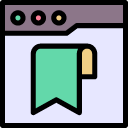

Session Saver Pro
Save and restore tab & window sessions. Search by URL, title, and domain.
Quick start
- Click the extension icon in the toolbar.
- Enter an optional session name.
- Click Save Current Session.
- Use Restore to reopen in new windows.
- Use Update to overwrite a saved session with your current tabs.
Search that actually helps
Type any substring to filter sessions by:
- URL (path & query included)
- Title
- Domain
Examples: github, ?q=, docs
Autosave
Enable autosave in Options to keep an always-fresh Auto-saved snapshot.
Open chrome://extensions, enable Developer mode, then pin the extension from the toolbar puzzle menu.